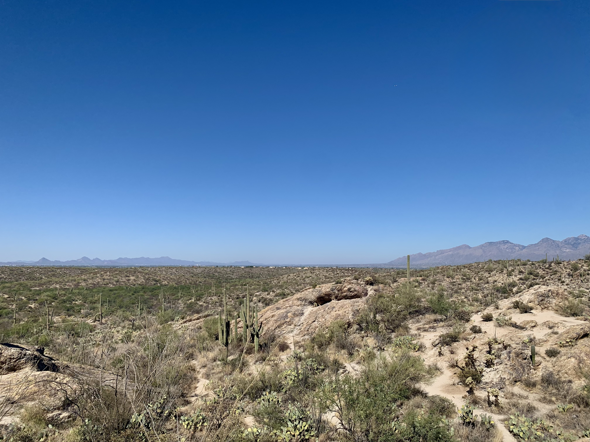
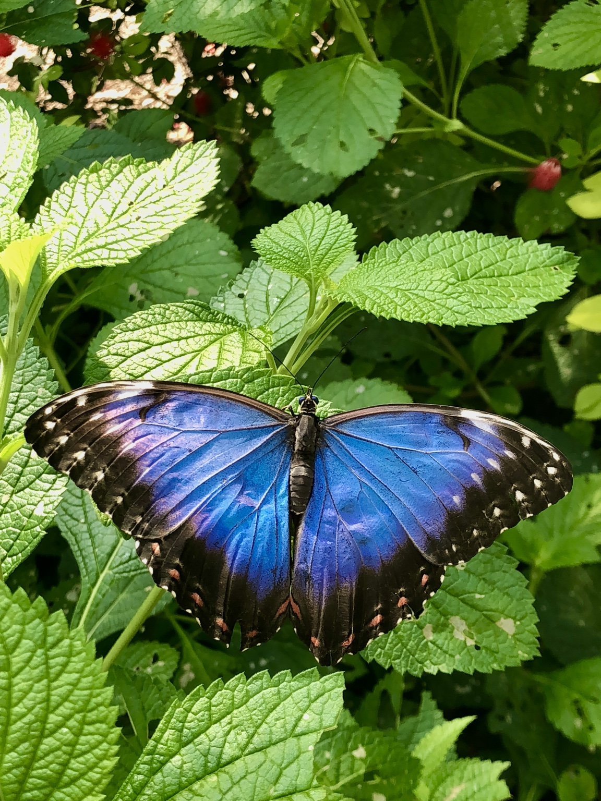
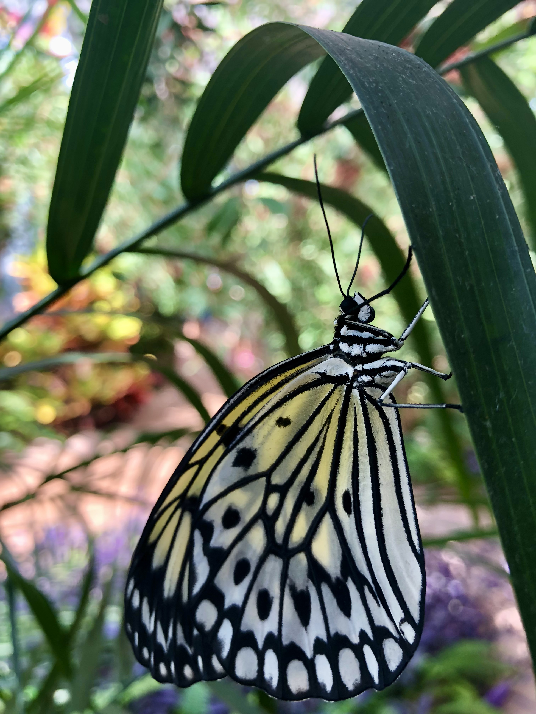
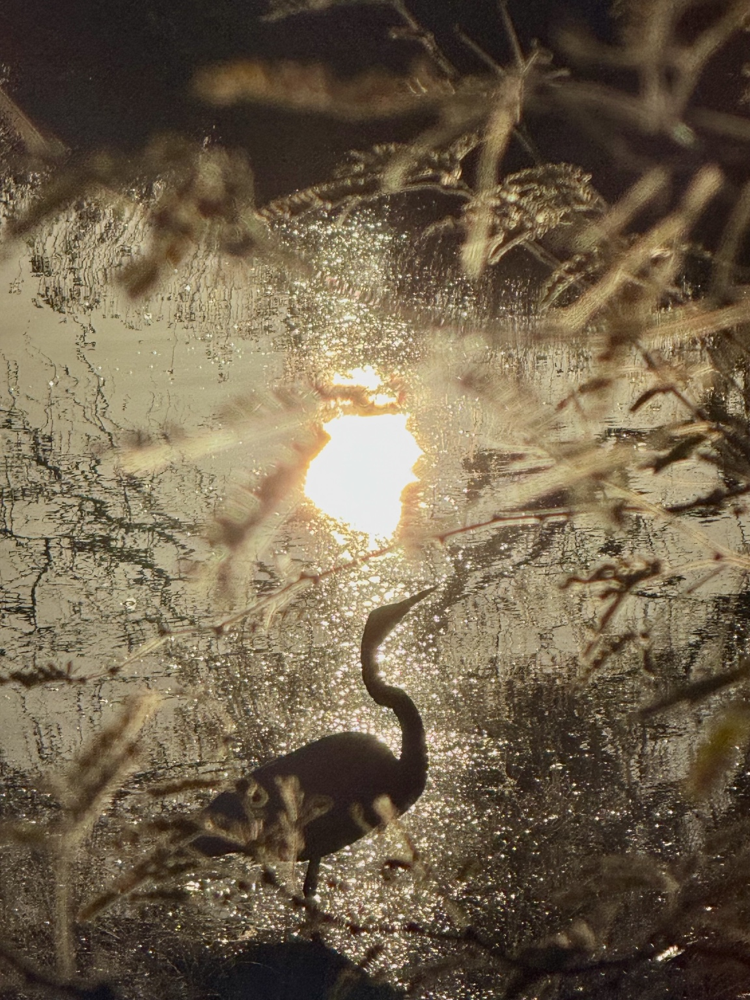
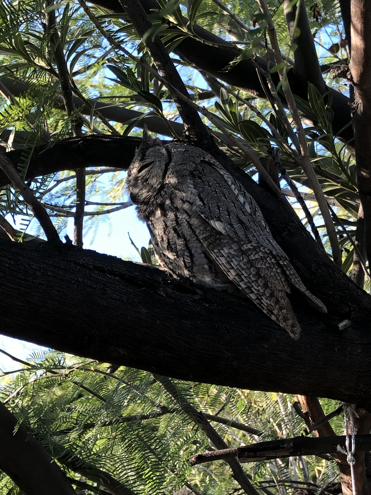
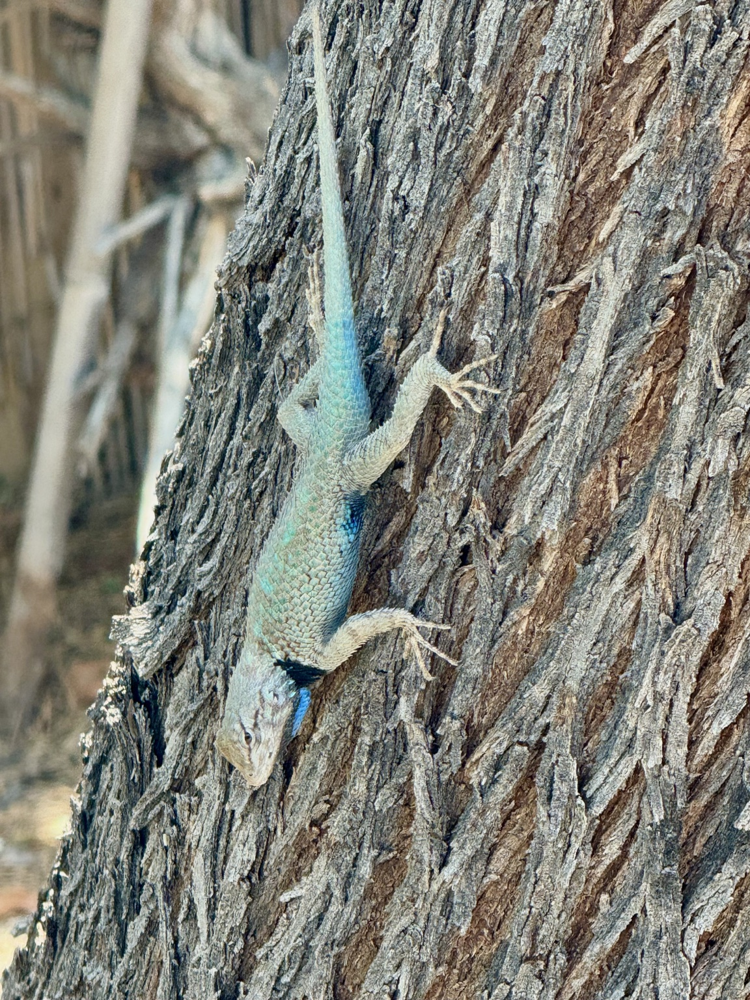

Education
Arizona State University
Northern Arizona University
I attended Northern Arizona University, where I earned my Bachelor of Arts in Interdisciplinary Studies with an emphasis in Humanities. As a transfer student, I was grateful to find a degree program that allowed me to build on more than 90 completed college credits while exploring subjects such as art, technology, film, religion, literature, and the environment, with a particular emphasis on Art History. During my time at NAU, I received multiple scholarships, including the Lois Kellogg Duncan Scholarship and the Dennis H. Atkin and Family Humanities Scholarship. I was also selected as a McKenzie Fellow and received the McKenzie Endowment for Democracy for my Art History research, which I presented at the NAU Undergraduate Research Symposium. I graduated Magna Cum Laude in May 2025 and am excited to continue my education through graduate study.
Pima Community College
At Pima Community College, I pursued my academic interests through a Liberal Arts degree, exploring a wide range of subjects and diverse perspectives. My coursework included two years of American Sign Language, as well as every Astronomy and Art course offered by Pima, further deepening my love of learning. I maintained a GPA of 3.8–4.0 and gained greater confidence in my academic abilities throughout my time at Pima. My dedication to learning earned me consistent placement on the Dean’s List and membership in the Phi Theta Kappa Honor Society.
Skills
- Artificial Intelligence (AI) Training and Development
- Data Analysis and Interpretation
- Research and Academic Writing
- Consulting and Professional Advising
- Project Management and Leadership
- Education and Course Development
- Teaching, Tutoring and Mentorship
- Content Creation and Communication
- Photography and Visual Arts
- HTML5, CSS3, Responsive Web Design, Accessibility, Usability, SEO, Version Control, GitHub, Website Development
- Interdisciplinary Studies in Humanities, Arts, Comparative Cultural Studies, Education and more
- Critical Thinking and Problem-Solving
- Collaboration and Teamwork
- Time Management and Organization
Work Experience
AI Expert Consultant
Upliva - New Jersey
I consult on and manage AI training for an international, AI-driven, human-led platform focused on comprehensive wellbeing and performance. I support the development and implementation of AI systems while helping maintain AI integrity, efficiency, and effectiveness as the platform and application rapidly expand to serve individuals and employees globally.
Data Analyst: AI Expert
Micro1 - California
Train and evaluate AI systems by reviewing outputs for accuracy, quality, reasoning, and alignment with project requirements. Apply expertise in AI training, data analysis, research, and evaluation to help improve model performance and reliability.
View my full Resume.
Angela's Photography Portfolio
Explore a curated selection of my photography work, showcasing my artistic vision and technical skills. From landscapes to animals, each image reflects my passion for capturing moments and telling stories through the lens.
Desert Landscapes

View the full .
Flowers and Butterflies


View the full .
Sunsets

View the full .
Birds

View more of my
Reptiles and Amphibians

View more of my